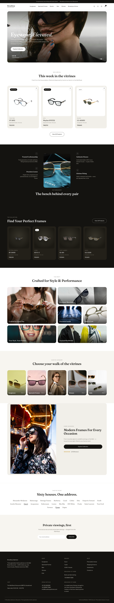
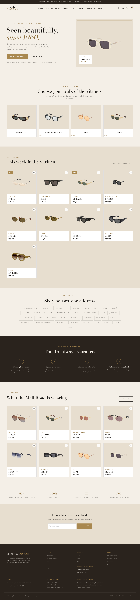
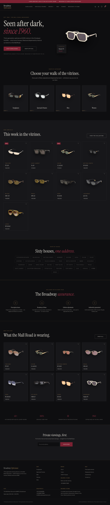
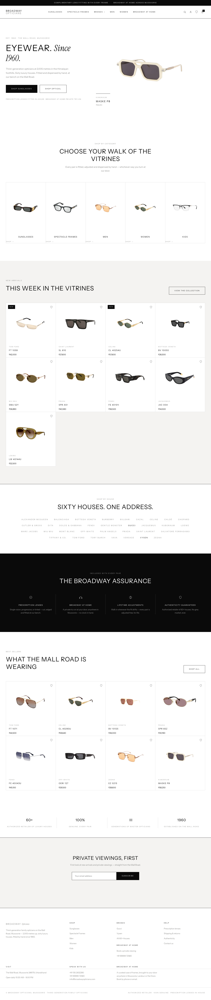
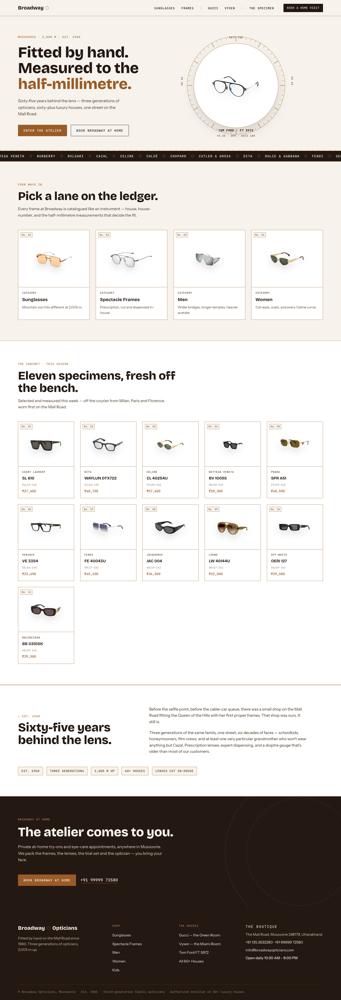
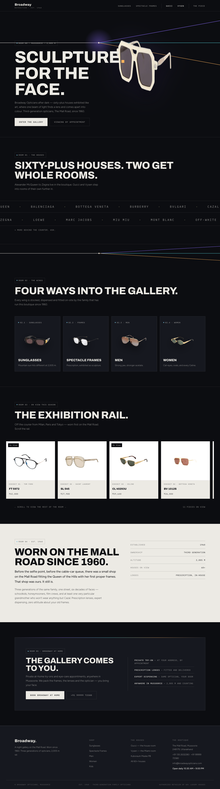
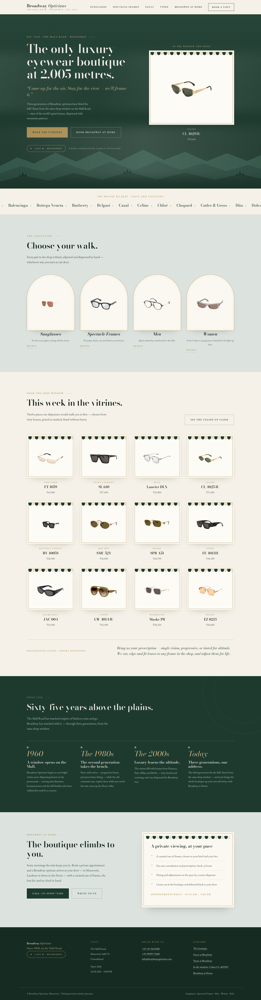
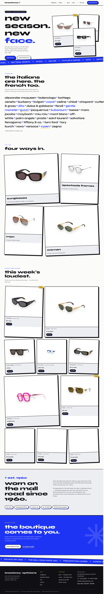

Editorial
Direction 08 · StorefrontPhotography-led, modelled on a modern luxury storefront — real editorial eyewear shots throughout: cinematic hero, lifestyle bento grid, dark product cards, closing campaign banner. Fraunces serif + clean sans, crisp white & black. The closest to a shot-in-studio brand site.

Broadway Maison
Direction 05 · StorefrontA proper premium storefront — the shoppable one. Warm ivory and gold, elegant Cormorant Garamond, a real shop header with cart and wishlist, product grids with "add to bag", best-sellers and services. Quiet luxury, like Oliver Peoples or Cartier eyewear.

Noir
Direction 06 · StorefrontDark and cinematic — onyx black, bone, a deep oxblood accent, big editorial serif headlines. Moody, adult, expensive. The Jacques Marie Mage / Gentle Monster world. Not a trace of beige.

Blanc
Direction 07 · StorefrontStark gallery-white — pure monochrome, thin spaced-caps type, hairline grid, museum-level whitespace. Cold, precise, ultra-premium. The Celine / The Row / SSENSE look.

The Atelier
Direction 01Sixty-five years of optical craft, told through the optician's own instruments — trial-lens rings, frame measurements, tortoise acetate and bronze rules. Warm, precise, unmistakably a specialist.

Refraction
Direction 02Broadway after dark — a night gallery where frames are exhibited like sculpture and a single beam of light refracts into spectrum. Built for the avant-garde shelf: Kuboraum, Cazal, Gentle Monster.

The Mall Road
Direction 03The only luxury eyewear boutique at 2,005 metres. Deodar green, mountain mist and brass vitrines — the story no other optician in the world can tell, told since 1960.

New Wave
Direction 04Porcelain-white fashion energy — cobalt marquee ribbons, tilted lookbook tiles, lowercase confidence. The youngest direction, tuned to Jacquemus, Off-White and Palm Angels.
